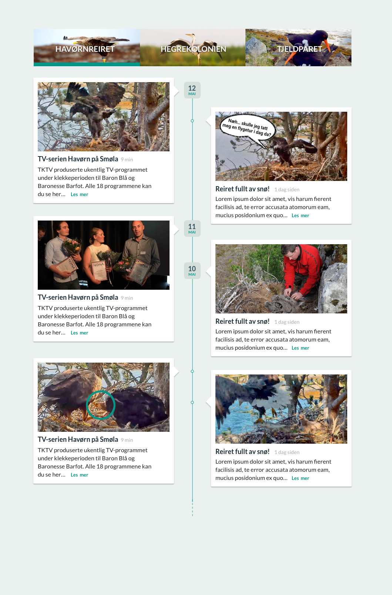
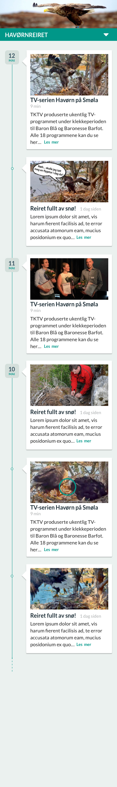
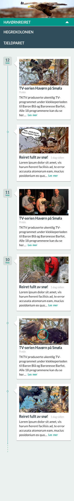
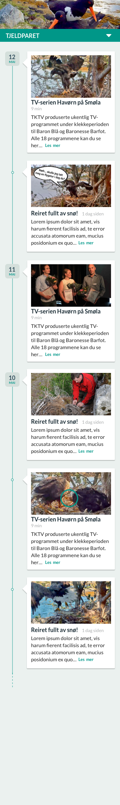

Welcome to our frontend developer test
The programming test is your opportunity to show off your technical excellence. In many aspects it is more important than the CV you sent us, as this tells what choices you make as a developer, and how you choose to solve problems presented to you.
- Please use good practices as a programmer when solving the problem.
- Please document and have unit-tests.
- Please submit your code as a github repository
Convert the following design to to a responsive website
Creating the menu:
- Use the channel web service:
https://ws.zooom.no/v1/channels
- With the JSON returned, for each item in the
items array create the top menu
- Use the field
channel.name for title in menu
- Use the field
cover_image for background image
See example of
simplified return from the channels web service
channels.json
Creating the timeline:
- Use the articles web service:
https://ws.zooom.no/v1/articles/{urlSafeName}?limit=10&offset=0
- The value for
urlSafeName should come from channel.urlSafeName from the channels web service
- With the JSON returned, for each item in the
items array create the timeline
- The timeline should be implemented by getting 10 articles from the web service
- The timeline should show articles in reverse chronological order, web service delivers them in this order.
- The timeline should show the date of the article to the left, if multiple articles is published on the same date, you should show a small dot.
- The image should use the field
cover_image from the JSON
- The heading should use the field
contents.title from the JSON
- The timestamp should use the field
meta.created from the JSON and should be displayed in human readable format
- The text should use the field
contents.preamble from the JSON.
- When the user scroll to the bottom of the view you should load more articles by increasing
offset parameter in the web service
See example of
simplified return from the articles web service
articles.json
Design:
The design should be responsive and have three different sizes, large, medium and small (desktop, tablet and mobile). Tablet design is same as desktop without margins.
Large (Desktop)

Small (Mobile)

Small navigation

Small second timeline selected
